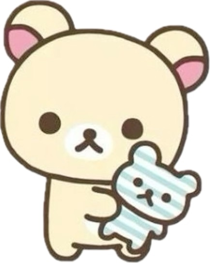
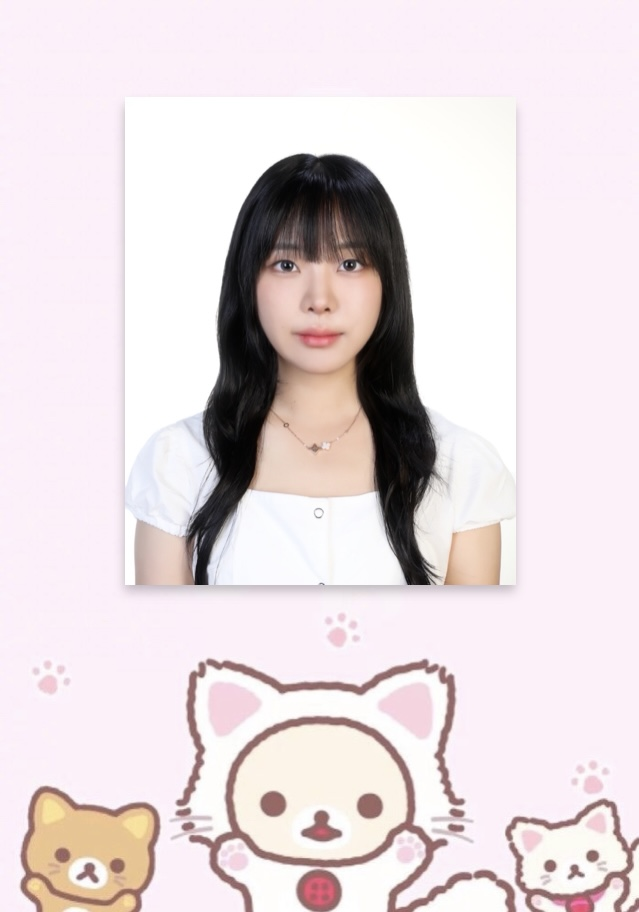

|
❤ 20문20답 ❤
1. 이름(한글/영어) : 박채윤/Park Chae Yoon
2. 성별 : 여자^~^
3. 생년월일 :2004년 8월 25일
4. 혈액형 : AB
5. 발사이즈 : 235
6. 좌우명 : 한 번 사는 인생, 후회하지 말장
7. 가장 기억에 남는 영화 : 쥬토피아
8. 가장 꼴불견이라고 생각하는 사람: 과한 인스타충
9. 지금 당장 먹고 싶은 것 : 동파육(5분 데친 청경채와..)
10. 좋아하는 동물 : 벨루가
11. 나의 이상형 : 키크고 까맣고 아랍상에 곱슬 잘어울리고 패션감각있고
귀여운 (약간의 소년미) 츤데레에 말 예쁘게하고 센스있는^-^; 남성분 구함.
12. 첫사랑은? : 아직 없는 듯?ㅎ
13. 사랑을 한 문장으로 정의 하자면? : 이 세상에 존재하는게 맞는 거냐..?
14. 로또 1등이 당첨되면?: 모두에게 비밀로 하고 혼자 기뻐할 듯
15. 가장 최근 본 드라마 : 멜로가 체질 ! 최근에 다시 정주행 했는데 너무 재밌었답ㅋㅋㅋ
16. 좋아하는 노래 : 요즘 힙합에 빠졌는데 원래는 팝송 자주 듣는다ㅎ^.^(셀레나 하트)
17. 무인도에 갇힌다면? : 타잔처럼ㅊ산다 .(생각하기도 싫다, 집이 최고다)
18. 좋아하는 라면 : 당연컨데 신라면! (BUT 지금은 보들보들 치즈볶음면 너무 먹고 싶다,,
19. 나에게 초능력이 생긴다면? : 타입랩스
20. 대학졸업 후 나에게 하고 싶은 말 : 돈 많이 벌자~~~~
ME!
photo





❤좌우명 ❤
Life is unfair, get used to it. – Bill Gates
|
❤나의 대학 생활 ❤
저는 전북대학교 스마트팜학과를 재학 중이 이에요~^0^~
지금 벌써 2학기 인데요~ 학교에 잘 적응해 나가고 있어요!
기숙사를 사는데 룸메랑 너무 재밌게 잘지내고 있어요
직영관 밥은 매일매일이 만족스럽답니다*.*
동아리도 들어가고 여러 사람들도 만나며 바쁘게 생활하고 있어요
학교 다니면서 요새 가장 열심히 하고 있는 활동은 영농창업 입니다
사업단에서는 직접 멜론, 블루베리, 무화과, 백향과 등을 키우고 있어용
또 오이, 딸기, 포도 등의 농가를 방문합니다.
박람회와 농촌 프로그램, 설명회를 찾아다니며 미래에 한 발자국 다가가는 기분입니다`.`앞으로 미래를 이끄는 농업인이 되기 위하여 알차게 대학생활을 보내볼께요^ㅊ^
앞으로의 계획
먼저! 기회가 된다면 언제든 여행을 갈거에요!
교환학생이든 어학연수든 워킹홀리 데이든! 해외 가고 싶어요 >.^
자격증도 많이 따고 싶네요!(토픽 아님 토익 , 한식 자격증도 ㅎㅎ)
대외활동도 열심히 할 거고요,
책도 앞으로는 한 달에 한 권씩 읽으며 교양을 쌓으려고요*.*
계획 한 바를 하나씩 이루다보면 언젠가는 어렸을 적 꿈꿨던 멋진 어른이 되 있을 거라 믿어요^~^!
포기 하지도 후회하지도, 그렇다고 너무 앞서나가지 않고 꾸준히 앞으로 나아가고 싶네요!
우리 모두 화이팅 :)
|